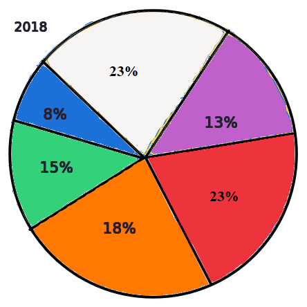

Quantitative Aptitude is one of the section of SBI PO Prelims exam along with Reasoning and Reading comprehension. Practice tests or Mock tests help aspirants to prepare for the exams.
Quantitative Aptitude is the ability of a person to make empirical enquiries through numerical data gathering and analysis by performing mathematical or statistical computations.
Total number of Questions: 100
Total number Quantitative Aptitude (QA) Questions: 35
Total number Reasoning (RE) Questions: 35
Total number Comprehension (COMP) Questions: 30
Maximum Time: 20 : 00 (Minutes : Seconds) per section
Note: Not allowed to change section once selected.
ABCD is a square ▢re of side 10 cm. If AS is 6 cm, QC is 5 cm, OD is 3 cm, BR is 7 cm and P is the mid-point of the line SO, find the area of the quadrilateral PQRS.
Options:
Option (a): 36.5604 sq cm.
Option (b): 21 sq cm.
Option (c): 30.56 sq cm.
Option (d): 29.06 sq cm.
Option (e): 28.0604 sq cm.
1.7% or ₹ 150.00/- whichever is higher of an employee’s salary is paid as professional tax per month and 22% of the balance per year as income tax where first ₹ 45,000.00/- is tax free. If employee’s salary is ₹ 8,500.00/- per month, how much amount does he pay per year as income tax?
Options:
Option (a): ₹ 10,144.00 /-.
Option (b): ₹ 11,120.00 /-.
Option (c): ₹ 10,256.00 /-.
Option (d): ₹ 12,144.00 /-.
Option (e): ₹ 12,244.00 /-.
3/4th of the work can be done Mallika in 15 days. After 10 days, Rani joins her and both work together for 5 days, after which Mallika leaves. If Rani takes 9 more days to complete the work, then, how many days will Rani alone take to do it?
Options:
Option (a): 56 days
Option (b): 44 days
Option (c): 40 days
Option (d): 60 days
Option (e): 46 days
Read the directions given below and solve the questions based on it.
Mark (A): If the question can be answered by using Statement A only but can’t be answered by Statement B.
Mark (B): If the question can be answered by using Statement B only but can’t be answered by Statement A.
Mark (C): If the question can be answered by using either statement alone.
Mark (D): If the question can be answered by using both statements together, but cannot be answered by using either statement alone.
Mark (E): If the question cannot be answered even by using both the statements together.
The one of the base angle of a triangle is 45° and base is 120 cm. What is the length of the shortest side of the triangle?
Statement A: The sum of the lengths of the other two sides is 160 cm.
Statement B: The other base angle is 60°.
Options:
Option (a): A.
Option (b): B.
Option (c): C.
Option (d): D.
Option (e): E.
Read the directions given below and solve the questions based on it.
Mark (A): If the question can be answered by using Statement A only but can’t be answered by Statement B.
Mark (B): If the question can be answered by using Statement B only but can’t be answered by Statement A.
Mark (C): If the question can be answered by using either statement alone.
Mark (D): If the question can be answered by using both statements together, but cannot be answered by using either statement alone.
Mark (E): If the question cannot be answered even by using both the statements together.
A, B, C, D, & E are five integers such that E < D, C > E, A < C < B. Is A the smallest integer?
Statement A: E + B < A + D
Statement B: B < D
Options:
Option (a): A.
Option (b): B.
Option (c): C.
Option (d): D.
Option (e): E.
Read the directions given below and solve the questions based on it.
Mark (A): If the question can be answered by using Statement A only but can’t be answered by Statement B.
Mark (B): If the question can be answered by using Statement B only but can’t be answered by Statement A.
Mark (C): If the question can be answered by using either statement alone.
Mark (D): If the question can be answered by using both statements together, but cannot be answered by using either statement alone.
Mark (E): If the question cannot be answered even by using both the statements together.
If w, x, y, and z are the digits of the four-digit number N, a positive integer, Is the number N divisible by 5 with remainder 0?
Statement A: w + x + y + z = 17
Statement B: N + 5 is divisible by 5
Options:
Option (a): A.
Option (b): B.
Option (c): C.
Option (d): D.
Option (e): E.
In a race Karan is 9/5 times faster than Arjun. If Arjun is given a head start of 800 m, how far must the winning post be if both Karan and Arjun have to end the race at the same time?
Options:
Option (a): 1400m.
Option (b): 1800m.
Option (c): 450m.
Option (d): 900m
Option (e): 1600m
A certain sum is lent out at a certain rate of interest for a certain period and the amount is 3.4 times as the principle. Had it been lent out on 64% higher rate of interest for 44% less time period the amount would have been how many times the principle?
Options:
Option (a): 2.75 times.
Option (b): 3.5 times.
Option (c): 3.7 times.
Option (d): 3.2 times.
Option (e): 3.0 times.
The areas of the three adjacent faces of a rectangular (▢le) box which meet in a point are known. The product of these areas is equal to:
Options:
Option (a): The volume of the box.
Option (b): Twice the volume of the box.
Option (c): The square of the volume of the box.
Option (d): The cube root of the volume of the box.
Option (e): None of these.
ABCD ia a square (▢re) with area 16 sq units. E, F and Q are the mid points of BD, AC and CD respectively. If P is any point inside the rectangle (▢le) ABEF and if X is the area of the triangle (▲le) DPQ, then choose the options that is true?
Options:
Option (a): 2 < x < 4.
Option (b): 8 < x < 32.
Option (c): 16 < x < 32.
Option (d): 16 < x < 64.
Option (e): None of these.
There are 8 types of chocolates in a shop; in how many ways can the shopkeeper sell 16 chocolates?
Options:
Option (a): C(12, 8).
Option (b): C(23, 7).
Option (c): C(22, 7).
Option (d): C(24, 7).
Option (e): C(25, 8).
Let S = 1/3 + 1/(3)² + + ……….; then (0.25)^(log₂ S) is ?
Options:
Option (a): 4.1
Option (b): 4.3
Option (c): 4.2
Option (d): 4.0
Option (e): 4.5
In a test, Raja scored 30% of the maximum number of marks and fails by 40 marks, but Sundar candidate who scores 45% of the maximum number of marks gets 20 marks more than necessarily passing marks. What is the maximum mark in the test?
Options:
Option (a): 400.
Option (b): 500.
Option (c): 600.
Option (d): 700.
Option (e): 450.
X is a number formed by writing the first 1002 whole numbers one after another from left to right then a vertical line is drawn which divides the number such that the number of digits on either side of line is the same. Find the remainder when the number by the digits on the left of vertical line, is divided by 25.
Options:
Option (a): 5.
Option (b): 3.
Option (c): 2.
Option (d): 4.
Option (e): 1.
If a = 2019, b = 2020 and c = 2022, then find the value of a² + b² + c² – 3abc.
Options:
Option (a): 42027
Option (b): 42407
Option (c): 42420
Option (d): 40427
Option (e): 42427
Natural numbers are written in the shape shown below. Find the sum of all the numbers in the 100th row?
Options:
Option (a): 5,00,050
Option (b): 50,00,050
Option (c): 5,050
Option (d): 50,050
Option (e): 550
The maximum value of a quadratic function is 3 when x = 1. Quadratic function’s value at x = 0 is 1. What is the value of the function at x = 5?
Options:
Option (a): - 29
Option (b): 29
Option (c): - 39
Option (d): 39
Option (e): 19
The surface area of cuboids is 96 cm². Find the maximum volume of the cuboids?
Options:
Option (a): 48 cm³.
Option (b): 64 cm³.
Option (c): 100 cm³.
Option (d): 84 cm³.
Option (e): 94 cm³.
If the roots of the equation x² + px + q = 0 differ from the roots of the equation x² + qx + p = 0 by the same quantity, then what is the value of (p + q)?
Options:
Option (a): -4.
Option (b): 4.
Option (c): 3.
Option (d): -3.
Option (e): None of these.
If a, b, c and d are real numbers such that b>0, d>0 and a/b< c/d, then which of the following is true?
Options:
Option (a): a/b < (a-c)/(b+d) < c /d.
Option (b): a/b < (a+c)/(b+d) < c /d.
Option (c): a/b < (a-c)/(b-d) < c /d.
Option (d): a/b < (a+c)/(b-d) < c /d.
Option (e): None of these.
Tops of two poles of height 24m and 16m of are connected by a wire. If the wire makes an angle 45° with the horizontal, then the length of the wire is
Options:
Option (a): 12.01 m.
Option (b): 11.31 m.
Option (c): 13.01 m
Option (d): 14.01 m
Option (e): None of these.
Find the present value of the payments received if compound interest of 10% p.a. is reckoned. ₹ 9,240.00/- received at the end of the 1ˢᵗ year and ₹ 7,744.00/- at the end of the 2ⁿᵈ year.
Options:
Option (a): 14,000.00/-
Option (b): 14,600.00/-
Option (c): 14,800.00/-
Option (d): 14,700.00/-
Option (e): None of these.
Directions (for questions 23 to 27): Refer the PIE Chart below and answer the questions based on it. The PIE Chart show the number of programmers for different programming languages for two different years. The total number of programmers in 2018 is 2000. The number of programmers in 2020 grew by 20% over the number of programmers in the year 2018.
Which is the following the programming language with least percentage (%) increase in the number of programmers for the year 2020 compared to 2018
Options:
Option (a): HTML & CSS
Option (b): React
Option (c): JAVA
Option (d): C & C++
Option (e): All of these.
Directions (for questions 23 to 27): Refer the PIE Chart below and answer the questions based on it. The PIE Chart show the number of programmers for different programming languages for two different years. The total number of programmers in 2018 is 2000. The number of programmers in 2020 grew by 20% over the number of programmers in the year 2018.
Find the Percentage (%) increase in the number of programmers for the programming language Flutter in the year 2020.
Options:
Option (a): 25%
Option (b): 33.33%
Option (c): 50%
Option (d): 75%
Option (e): None of these.
Directions (for questions 23 to 27): Refer the PIE Chart below and answer the questions based on it. The PIE Chart show the number of programmers for different programming languages for two different years. The total number of programmers in 2018 is 2000. The number of programmers in 2020 grew by 20% over the number of programmers in the year 2018.
Which is the following programming languages has shown decrease in the number of programmers from the year 2018 to 2020?
Options:
Option (a): C & C++
Option (b): React
Option (c): Python
Option (d): All of these.
Option (e): None of these.
Directions (for questions 23 to 27): Refer the PIE Chart below and answer the questions based on it. The PIE Chart show the number of programmers for different programming languages for two different years. The total number of programmers in 2018 is 2000. The number of programmers in 2020 grew by 20% over the number of programmers in the year 2018.
Find the maximum difference between the number of programmers of any two programming languages taken together for any one year and that of other two programming languages for the other year.
Options:
Option (a): 660
Option (b): 600
Option (c): 560
Option (d): 460
Option (e): None of these.
Directions (for questions 23 to 27): Refer the PIE Chart below and answer the questions based on it. The PIE Chart show the number of programmers for different programming languages for two different years. The total number of programmers in 2018 is 2000. The number of programmers in 2020 grew by 20% over the number of programmers in the year 2018.
For how many programming languages, number of programmers have increased.
Options:
Option (a): 4
Option (b): 3
Option (c): 5
Option (d): All Programming languages.
Option (e): None
Instead of 42 a candidate took 24 as divisor. Which gives a quotient of 49. Find the correct quotient. Note: remainder is 0.
Options:
Option (a): 28
Option (b): 27
Option (c): 29
Option (d): 30
Option (e): 26
Choose the option to replace question mark (?) in the following number series.
?, 105, 26, 10.2, 7.04, 6.408, 6.2816, 6.25632
Options:
Option (a): 511
Option (b): 520
Option (c): 500
Option (d): 510
Option (e): 514
Find the sum of two digits in a number. If 4/5 of the number is 16.
Options:
Option (a): 1.
Option (b): 2.
Option (c): 3.
Option (d): 5.
Option (e): 4.
Factors of L.C.M. of two numbers are 17 and 18 and their H.C.F. is 24. The larger of the two numbers is:
Options:
Option (a): 432.
Option (b): 402.
Option (c): 430.
Option (d): 400.
Option (e): None of these.
Upon dividing by a divisor we get 27 as remainder. When thrice the original number is divided by the same divisor, the remainder is 24. Find the divisor?
Options:
Option (a): 40.
Option (b): 44.
Option (c): 57.
Option (d): 50.
Option (e): 37.
Find the sum of the digits in the number formed by arranging the letters of the word 'INCOMPREHENSIBILITIES' in different ways, such a way that the vowels always come together only at the beginning?
Options:
Option (a): 45.
Option (b): 70.
Option (c): 75.
Option (d): 50.
Option (e): 60.
Fruits is to be distributed among P, Q, R, S in the proportion of 4 : 3 : 5 : 2. If R gets 10000 more than P, what is sum of P and R's share?
Options:
Option (a): 90
Option (b): 900
Option (c): 90000
Option (d): 9000
Option (e): 900000
Find the cost price of a product so that there may is a profit of 40% after allowing a discount of 20% on the maximum retail price.
Options:
Option (a): 100%.
Option (b): 1000%.
Option (c): 150%.
Option (d): 200%.
Option (e): 75%

Made with
HTML Code Creator